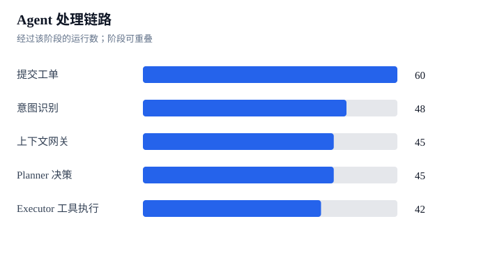
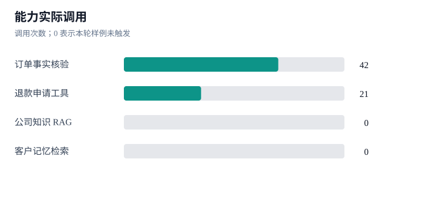

M4 Agent 评估看板
v1.5.0 · 隔离环境合成数据 · 基于 2026-10-08 23:55 的冻结报告
合成案例20 × 3共 60 次运行
意图识别483 次分类后拦截
Planner45通过意图检查后进入
Executor42实际进入工具节点


RAG 的口径：“上下文网关”负责上下文整理，不等于访问向量数据库。本轮没有调用公司知识 RAG 或客户记忆检索工具；需要另外设计知识问答与跨工单偏好样例才能评估检索质量。
自动评分 59/60，唯一未通过项是历史退款状态的词面误判。意图识别使用模型分类；检查点中的 108 次模型调用与 252,319 token 只统计图内 Planner 消息，不含意图分类器。6 次待付款取消回复由固定模板改写。